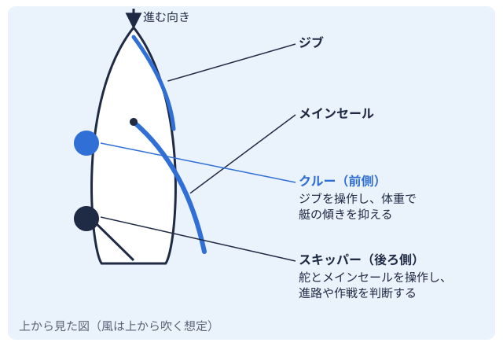

セーリング技術 2026-11-18
ヨットのスタートのコツ｜ラインの確認・位置取り・加速を練習に落とす
ヨットレースのスタートで押さえたいのは、ラインの位置を把握し、決めた場所に決めた時刻で入り、スタート信号のときに全速に近い状態でラインを越えることです。スタートで前に出られると、風の振れに合わせて自由にコースを選びやすくなります。反対に、ラインの手前で止まってしまったり、早すぎてやり直しになったりすると、レースの前半を取り返すのに苦労する場合があります。
この記事は、大学ヨット部の練習やレースで「スタートがうまくいかない」と感じている部員に向けて、スタートを分解して練習に落とし込む方法を整理したものです。スタートの信号と旗の規則はヨットレースのルール基礎で解説しているため、ここでは技術と練習に絞ります。内容は海外の解説記事を参考にした一般的な考え方で、部のコーチや先輩の指導、出場する大会の帆走指示書大会ごとに主催者が出す、コースやルールの取り決めを書いた文書。を優先してください。
スタートの「良い・悪い」は何で決まるか
まず、何を目指すスタートなのかをそろえます。海外の指導者Greg Fisher氏は、良いスタートを「前列から十分なスピードでラインを抜け、最初の風の振れを活かせる状態」と説明しています。風上自分の艇から見て、風が吹いてくる側。風上へ進むにはジグザグに走る必要がある。 側に1艇でも並ばれると、最初の振れを活かしにくくなるためです（Sailing World｜Sailboat Racing Starts Done Right、2020年8月11日）。
側に1艇でも並ばれると、最初の振れを活かしにくくなるためです（Sailing World｜Sailboat Racing Starts Done Right、2020年8月11日）。
つまり、ラインの一番端の有利な場所を取ることが目的ではなく、周りの艇に邪魔されず、全速で出ていける状態をつくることが目的になります。
スタートで起こりがちな失敗
失敗の形はおおむね次の3つに分けられます。自分たちの部の練習レースで、どれが多いかを振り返ってみてください。
- 早すぎる：スタート信号の時点でラインのコース側に出てしまう（OCSスタートの合図の前にスタートラインを越え、やり直さなかった艇に付く略称。の扱いになる場合があります）
- 遅すぎる：ラインの手前で風下自分の艇から見て、風が吹いていく側。風上の反対側。追い風で進む向き。や後ろの艇に押さえられ、スタート後に速度が出ない
- 位置が悪い：混み合う場所に入り、風を遮られたり、他艇に進路を狭められたりする
OCSの仕組みと、個人リコールの旗、I旗・Z旗・U旗・黒旗の違いは、前述のルール基礎の記事に表でまとめています。
手順1：レース前にラインを確認する
スタート前の5〜10分は、ラインを確認する時間に充てるのが基本とされています。Fisher氏は、ライン見通しの確認、両端のレイライン、潮流、艇の操作性と最低速度の確認を挙げています。
ラインの見通し（ライン・サイト）
スタートラインは、一端が運営艇（本部船）、もう一端がマーク（ピン）で作られるのが一般的です。ラインの上にいるかどうかを海上で判断するには、ラインの延長線上にある陸上の目標物（建物や鉄塔など）を使う方法があります。Fisher氏は、ラインの端の風上側から4〜5艇身下がった位置で目標を見通し、距離を詰めながら位置を合わせる方法を紹介しています。
ただし、ラインが長いほど、実際にはラインの後ろにいても「ラインの上にいる」と錯覚しやすい点には注意が必要です。見通しの目標が見つからない海面では、GPS機器を使う大会や部もありますが、使用できるかどうかは大会の規則や公示大会の主催者が事前に出す、参加資格や日程などを知らせる文書。で確認してください。
有利端（ラインバイアス）を調べる
スタートラインは、風に対してほぼ直角に設定されるのが理想ですが、実際には風が直前に振れて、どちらかの端が有利になることがあります。Fisher氏が紹介する方法のひとつがコンパス法で、ラインに沿って走ったときの方位と、風上に艇首を向けたときの方位を比べます。両者の差が90度からどれだけずれているかで、有利端と偏りの大きさをつかめるという考え方です。
SpinSheetに掲載されたScott Nixon氏（Quantum Sails）の解説でも、スタート前の手順として、ラインを低速で走って有利端を調べること、両端の潮流を確認すること、両端へのレイラインを走って位置を把握することが挙げられています。潮流は、小さなラインバイアスの差より大きく効く場合があるとも説明されています（SpinSheet｜Expert Tips on Winning the Start of a Sailboat Race）。
自艇の「最低操縦速度」を知る
艇を止めに近い状態で待つとき、どこまで速度を落とすと舵が効かなくなるかは、艇や風・波によって変わります。レース前に、舵が効く最低速度と、そこから加速に移るのにかかる時間を確かめておくと、後の手順がやりやすくなります。
手順2：どこからスタートするかを決める
ラインのどこから出るかは、有利端、艇数、風の安定度、自分たちの得意なアプローチで変わります。
有利端か、中央か
Fisher氏の整理では、ラインが短い場合や、有利端の差が5度以下の場合は、中央寄りからのスタートが有効とされています。どちらに風が振れても対応しやすいためです。一方、50艇以上の大きな艇団の場合や、有利端の差が15〜20度ある場合は、有利端寄りが有利になるとしています。ただし端そのものは混雑するため、端から約3分の1ほど離れた位置が現実的だとも述べられています。
これはヨットの種類や海面で変わる目安であり、大学ヨットの大会にそのまま当てはまるとは限りません。艇数や海面の広さが違う点も含めて、目安として捉えてください。
「他の艇がいない場所」を狙う考え方
Ken Legler氏は、距離の短い沿岸レースでは「他の艇がいない場所でスタートする」ことを勧めています。有利端は人が集まりやすく、前に出られない艇、早く出てしまう艇、風を遮られる艇が出やすいというのが理由です。この考え方は、高校・大学・冬季シリーズなどの規模の小さいレースを想定した内容とされています（Sailing Scuttlebutt｜Start Where Others Are Not、2017年）。
どの考え方が合うかは、艇数と海面の風次第です。練習レースで複数の位置を試し、「混んだ端」と「少しずらした場所」で、スタート後の速度や進路の自由度がどう違うかを記録しておくと、自分たちの海面での判断材料になります。
手順3：アプローチとタイミングを決める
スタートの精度を左右するのは、「いつ、どこからラインに向かうか」を事前に決めておくことです。
アプローチをひとつに決めておく
Fisher氏は、スタートのアプローチを毎回同じ型にしておくと、変わる要素がタイミングだけになり、判断が安定すると説明しています。氏自身はポートタック側からのアプローチを好み、スターボードタックで待つ艇群の少し風下から入って、スタート約1分前に隙間へタック風を艇の左右どちら側から受けているかを表す言葉。右ならスターボード、左ならポート。 する方法を紹介しています。この方法には相手艇との権利関係が絡むため、規則10〜13の理解が前提になります。
する方法を紹介しています。この方法には相手艇との権利関係が絡むため、規則10〜13の理解が前提になります。
時間と距離を事前に測っておく
氏は、ラインの端（ピン）からスタート地点まで往復して、かかる時間を測っておく方法を勧めています。その時間に10〜15秒を足し、スタートの55〜60秒前にはスターボードタックに入り終えるのが目安とされています。風が弱く波が荒い場合や、艇数が多い場合は、さらに早める考え方です。たとえば所要時間が40秒なら、スタートの1分45秒前にピンを離れる計算になります。
大学ヨットのクラスは2人乗りの470級全長4.7mの2人乗り競技用ヨット。大きな追い風用の帆とワイヤーを使う。 ・スナイプ級2人乗りの競技用ヨット。追い風用の大きな帆を持たず、ワイヤーも使わない。が中心です。3人乗りを想定した役割分担の例も出ていますが、ここは部ごとに異なるため、「誰がライン見通しとタイムを見るか」を事前に決めておくことが大切です。役割の考え方はスキッパーとクルーの違いも参考にしてください。
・スナイプ級2人乗りの競技用ヨット。追い風用の大きな帆を持たず、ワイヤーも使わない。が中心です。3人乗りを想定した役割分担の例も出ていますが、ここは部ごとに異なるため、「誰がライン見通しとタイムを見るか」を事前に決めておくことが大切です。役割の考え方はスキッパーとクルーの違いも参考にしてください。
ホールド中の位置取り
待っている間の位置は、風上の艇との関係で決まります。Fisher氏は、風上の艇の艇首よりわずかに後ろでクリアな風を確保する位置、風上艇との距離は艇幅1つ分以下、風下側の艇とは2〜3艇幅の余裕を取ることを紹介しています。風下側の隙間は、スタート直前の5〜10秒に速度を少しずつ上げるために使います。
早く着きすぎた場合は、風下に落とすと隙間を失うため、風上へ向けて艇速を落とす方法が紹介されています。その際、風上側の艇に避ける余地を与える必要があり、他艇との関係では規則が優先されます。
手順4：加速してラインを越える
位置が決まったら、最後は加速です。Windcheck Magazineの記事では、ディンギー帆で走る小型のヨット。大学ヨット部で使う470級やスナイプ級がこれにあたる。のスタートに必要な技術として、同じ位置に留まること、その場で旋回すること、ゼロから全速まで素早く加速することが挙げられています（Windcheck Magazine｜Work on your starting position）。
Nixon氏は、スタート信号の少し後に、目標の速度・目標のヒール風を受けた艇が横に傾くこと。傾きすぎると転覆しやすいため、体重などで抑える。角でラインを越えることを目指すと述べています。Fisher氏は、スタート直後の最初の1分は艇速を最優先にし、すぐ風上へ上りたくなる気持ちを抑えると良いと説明しています。セール風の力を受けて艇を進ませる布製の帆。艇には大きさの違う帆を組み合わせて使う。 を急に絞り込むと、艇が失速して横に流れる場合があり、少しずつ速度を乗せていく考え方です。
を急に絞り込むと、艇が失速して横に流れる場合があり、少しずつ速度を乗せていく考え方です。
ヒールとセールトリムを整える
加速の局面では、艇を傾けすぎない、セールを引きすぎないことが大切です。ヒールの調整はヒール角度のコントロールのコツで、風向の見方は風向き判断のコツで詳しく扱っています。スタートの直前に風が振れそうなときは、風の変化を事前に観察しておくことが助けになります。
スタート直後にタックするか
スタート後すぐにタックして別のサイドに出るかどうかは、風の振れ方や周りの艇の位置で変わります。タックの技術はタッキングとジャイビングのコツにまとめています。
練習メニューの例（部の練習に取り入れる場合）
ここまでの内容を、練習メニューに落とすと次のようになります。いずれも編集部の提案であり、実施の可否や安全面は部の指導者の判断に従ってください。
| 練習 | ねらい | 内容の例 |
|---|---|---|
| ラインの確認 | 有利端と見通しの把握 | 練習前にラインを走り、艇首を風上へ向けた方位を記録。陸上の目標物を決める |
| 往復タイム計測 | 時間と距離の感覚 | ピンから目標地点まで往復し、所要時間をメモする |
| ホールド練習 | 同じ位置に留まる操船 | ブイの横で、舵が効く最低速度を保って待つ |
| カウントダウン加速 | 全速で入る | 決めた時刻にブイへ向けて加速し、通過時の速度を比較する |
| 模擬スタート（短時間） | 本番に近い判断 | 2〜3分のシーケンスを繰り返し、位置と速度を振り返る |
Nixon氏も、最初のレースの前に2〜3分の短い練習スタートを1〜2回行い、舵手・トリマー・船首の呼吸と、最低操縦速度を確かめることを勧めています。ブイの横で艇を止める練習や、カウントダウンに合わせてブイへ全速で向かう練習は、Windcheckの記事でも紹介されています。
全体の練習メニューの組み立てはヨット部の練習メニュー基礎、クルー2人乗りの艇で、前側に座って小さな帆などを操作し、体重を使って艇の傾きを抑える人。 
練習の成果を大会の成績表で振り返る
自分たちの部のスタートを振り返るときは、練習の記録だけでなく、実際の大会の成績表も手がかりになります。成績表のOCSなどの略号は、スタートの失敗が成績に表れた例として読めます。ただし成績表だけでは理由までは分かりません。事実として読めるのは「そのレースでOCSが記録された」ところまでで、早すぎたのか、旗の種類が違ったのかは、帆走指示書などで確認します。
ヨットマニアでは、次のページから大会情報と成績にアクセスできます。ディレクトリの掲載対象は関東36校・近畿北陸10校のみで、他の水域全国の大学ヨット部を地域ごとに分けた区分。北海道から九州まで全国に9つある。は成績PDFへのリンクのみの掲載です。
観戦の立場でスタートを見るときの視点は大学ヨットの大会の見方にあります。
よくある質問
スタートはラインの端と中央、どちらが有利ですか？
ラインの角度や艇数で変わります。Fisher氏の整理では、ラインが短い、または有利端の差が5度以下なら中央寄り、50艇以上や差が15〜20度あるなら有利端寄りが有利とされています。ただし端は混み合うため、端から少し離れた位置が現実的とも説明されています。海面や艇数が異なる大学の大会では、練習で自分たちの目安を確かめてください。
スタートが早すぎるのが不安です。どう防げばよいですか？
ライン見通しで位置を確認すること、事前に往復タイムを測っておくこと、早く着きそうなときは風上へ向けて速度を落とす選択肢を持っておくことが、紹介されている対策です。旗の種類によって違反の扱いが変わるため、帆走指示書も確認してください。
練習でまず何から始めればよいですか？
ラインの確認と、ピンから目標地点までの往復タイム計測から始める方法があります。道具が少なくても、時間と位置の感覚を養えるためです。
風が弱いときのスタートで注意することは？
Fisher氏は、風が弱く波が荒い場合は、スターボードタックへ入り終える時刻を、さらに早めることを紹介しています。
まとめ
ヨットのスタートは、(1)ラインを確認する、(2)どこから出るかを決める、(3)アプローチとタイミングを決める、(4)加速してラインを越える、の4つに分けると練習しやすくなります。いずれも海外の指導者の記事で紹介されている一般的な考え方で、大学ヨットの海面や艇種にそのまま当てはまるとは限りません。まずは自分たちの海面で、ラインの確認と往復タイムの計測から試し、記録を取りながら自分たちの型をつくることから始めてみてください。
出典
- Greg Fisher「Sailboat Racing Starts Done Right」Sailing World、2020年8月11日 https://www.sailingworld.com/?p=68833
- Scott Nixon（Quantum Sails）「Expert Tips on Winning the Start of a Sailboat Race」SpinSheet https://www.spinsheet.com/racing/expert-tips-winning-start-sailboat-race
- Ken Legler「Start Where Others Are Not」Sailing Scuttlebutt、2017年 https://www.sailingscuttlebutt.com/?p=69304
- Dave Dellenbaugh「Work on your starting position」Windcheck Magazine https://www.windcheckmagazine.com/article/work-on-your-starting-position
- World Sailing「The Racing Rules of Sailing」 https://www.sailing.org/racingrules/
PR
この部活・競技を応援したい方へ
体育会学生を支援するプラットフォーム「ツナカレ」で、応援できる部活を探せます。
PR
取材してほしい部活を募集中
あなたの部活・大会を取材してほしい方はこちらからご依頼ください。
部活を続けながら、就活も進めたい方へ
体育会の学生のための就活相談です。無料で、メールアドレス・学年・所属の入力だけで始められます。